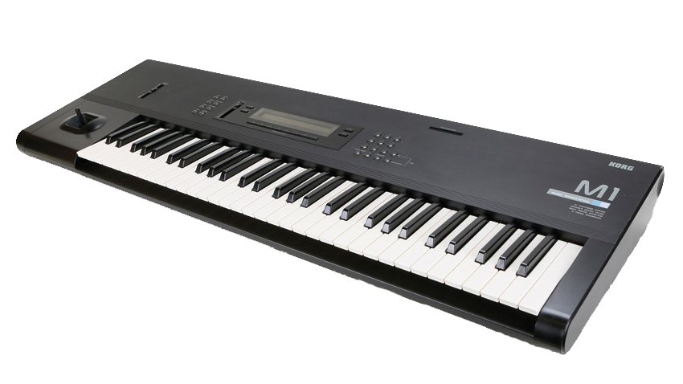

Mientras los belgas hacían Hip House, los italianos hacían House de piano.
While the Belgians were making Hip House, the Italians were making piano House.
El Italo House fue el segundo género House enormemente popular, que explotó con el hit Black Box - Ride On Time y probablemente alcanzó su punto máximo con Right Said Fred - I'm Too Sexy dos años después.
Italo House was the second enormously popular House genre, breaking out with the hit Black Box - Ride On Time and probably peaking with Right Said Fred - I'm Too Sexy two years later.
Lo que hizo posible esta repentina explosión de música electrónica de "piano" (el Oldskool Rave Hardcore, el UK House, el Happy Hardcore, el Progressive House, el Balearic/Dream Trance, el Anthem House y el Eurohouse abusaban todos de los rellenos de piano a principios de los 90) fue el sintetizador Korg M1.
What made this sudden explosion of "piano" electronic music possible (Oldskool Rave Hardcore, UK House, Happy Hardcore, Progressive House, Balearic/Dream Trance, Anthem House, and Eurohouse were all caning piano fills in the early 90s) was the Korg M1 synthesizer.

Lanzado en 1988, el Korg M1 fue el primer sintetizador en reproducir sonidos de piano acústico realistas que no sonaban a esa basura metálica, sintética, zumbona y de forma de onda FM digital al estilo DX7. El secreto estaba en usar samples reales y ricos de instrumentos acústicos, en vez de reproducciones digitales de ellos.
Released in 1988, the Korg M1 was the first synthesizer to reproduce realistic acoustic piano sounds that didn't sound like some tinny digital synthetic buzzy FM waveform DX7 crap. The secret was using actual rich samples of acoustic instruments rather than digital reproductions of them.
El Italo House tenía la receta perfecta para el éxito comercial: ganchos pegadizos, ese delicioso bombo del 909, líneas de piano eufóricas impulsadas por el Korg M1 y, por supuesto, divas a los gritos (ya fuera contratando a las propias o sampleando a Loleatta Holloway - Love Sensation).
Italo House had the perfect recipe for commercial success: Catchy hooks, that delicious 909 kick, Korg M1-driven uplifting piano lines, and of course bellowing divas (either hiring their own or sampling Loleatta Holloway - Love Sensation).
Y no cualquier diva a los gritos, sino divas gospel exageradas, directas a la cara, con el dedo acusador, sacudiendo la cabeza, descaradas, al estilo Aretha Franklin llegando hasta el Cielo, ¿pueden-sentir-al-SEÑOR? — del tipo que habla del empoderamiento gay y de la ferocidad de la moda como un despertar religioso. Es un mensaje tan potente y evocador de autoempoderamiento que surgió un subgénero llamado Gospel/Diva House, enfocado exclusivamente en las hazañas vocales melodramáticas de las divas soul. Hoy en día, la mayor parte del Italo House es Gospel House.
Not just any bellowing divas but over-the-top, in-your-face, finger wagging, head shaking, sassy black Aretha Franklin reaching-up-to-Heaven can-you-feel-tha-LORD gospel divas -- the kind that speak of gay empowerment and fashion fierceness as a religious awakening. It's such a powerful and evocative message of self-empowerment that a subgenre emerged called Gospel/Diva House that focused exclusively on the melodramatic vocal heroics of Soul divas. Most Italo House today is Gospel House.
El Italo House fue tan masivo que hasta Madonna hizo un tema de Italo House con Vogue.
Italo House was so massive that even Madonna made an Italo House track with Vogue.
El sonido clásico del Italo House ya no existe. Sus productores pasaron a hacer Eurodance, Eurohouse, Garage y Disco House cuando los pianos se agotaron (se retiraron alrededor de 1995).
The classic Italo House sound is not around anymore. Its producers went on to make Eurodance, Eurohouse, Garage, and Disco House when the pianos got played out (they were retired around 1995 or so).